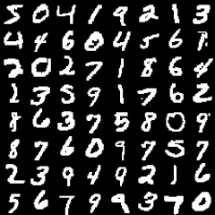

Astetta eeppisempi neuroverkko-opas
Sisällysluettelo
1. Esipuhe
Kaverini IRC:ssä ehdotti, että kirjoittelisin hieman ajatuksiani ylös. Näyttäisi siltä, ettei suomen kielellä netistä löydy juurikaan hyviä lähteitä neuroverkkojen opiskeluun, varsinkaan sellaisia, joiden ymmärtämiseen ei vaadita laajoja yliopistotutkintoja. Samalla kun joku (toivottavasti) hyötyy tästä tekstin informaatiosisällöstä se myöskin auttaa minua itseäni ajatusten pureskelun muodossa.
Hieman taustaa itsestäni. Kirjoitushetkellä aloittelen neljättä vuotta Aalto-yliopistossa teknillisen fysiikan ja matematiikan koulutusohjelmassa, pääaineenani systeemitieteet. Ohjelmointia olen harrastanut yläkoulun penkiltä asti eri muodoissaan webissä, fyssasimulaatioissa, pelimoottoreissa, verkko-ohjelmoinnissa... Myöskin työkokemusta löytyy näiltä aloilta. Tarkempi CV löytyy kotisivuiltani. Vaikka matematiikassa ja fysiikassa olen ihan kelpo tykkään lähestyä monia ongelmia ohjelmistoprojektin näkökulmasta: miten sen saa koodiksi ja miten sen koodin saa tehokkaaksi? Soveltaminen on jees.
Neuroverkoista innostuin joskus lukioon siirtyessäni ja kiitän isääni tästä kipinästä. Tiesin kyllä, että aivoissa on jotain hermosoluja ja niissä kulkee jotain signaaleja, mutta ajatus siitä, että niiden mallintamisella voisi tehdä jotain hyödyllistä oli räjäyttää pääni.
Pyrin tässä kirjoitelmassani opastamaan alkuun neuroverkkojen koodaamisessa samalla kertoen niiden matemaattisista taustoista, keskittyen kuitenkin käytäntöön. Lukijalla on hyvä olla hallussaan lineaarialgebran peruskäsitteistö ja kyky lukea yksinkertaista Python-koodia. Ei kannata myöskään pelästyä englannin kielen lainasanastosta, jota tulen häpeämättä käyttämään. Kaikki tieteen terminologia ei yksinkertaisesti käänny suomeksi ilman että merkitys muuttuu.
Tässä vaiheessa kirjoitelmaa on vaikea sanoa, kuinka monta osaa tulen tekemään. Toivottavasti päästään biologisiinkin malleihin ennen kuin väsähdän. :)
Let´s go!
2. Johdanto
Neuroverkot tekniikkana on koneoppimisen alalaji. Koneoppiminen ja tiedonlouhinta (engl. data mining) liittyvät toisiinsa läheisesti: molemmissa ajetaan suuret määrät informaatiota jonkin tilastollisen algoritmin läpi ja yritään löytää sieltä korrelaatioita, joita voidaan hyödyntää erinäisissä luokittelu- tai regressio-ongelmissa.
Tällainen datanrouskutukseen perustuva analytiikka on tällä hetkellä nouseva trendi maailmalla ja se onkin saanut muotinimen "Big Data". Yritykset kaipaavat tilastotieteen osaajia tutkimaan esimerkiksi asiakaskäytöstä sen parempaa ennustamista varten. Eräs mahdollistava tekijä on ollut tehokkaiden prosessoreiden ja etenkin näytönohjainten nopea kehittyminen. Mutta myöskin tekniikat ovat kehittyneet.
Eräs avainhenkilö neuroverkkojen kehityksessä on ollut Prof. Geoffrey Hinton Toronton yliopistosta. Hän osana kehittämässä backpropagation-algoritmiä, jota mekin tulemme käyttämään myöhemmässä vaiheessa. Siinä missä yrityksen marketointiosasto saattaa puhua "Big Data":sta mainostaa hän tutkijoille "Deep Learning":ia, eli ajatusta siitä, että vanhat, jo 1970-luvulla kehitetyt algoritmit ja menetelmät toimivat hyvin (tietokoneiden laskentatehon kasvettua räjähdysmäisesti), kunhan neuroverkko on tarpeeksi syvä. Deep learning myöskin tuo uusia oivalluksia neuroverkon topologiaan ja neuroverkon kaarien alustukseen, mutta perusajatus on kuitenkin sama kuin vuosikymmeniä sitten.
Termiä supervised learning käytetään kaikista koneoppimisen tekniikoista, joissa oppiminen tapahtuu ohjatusti, eli algoritmi saa syötteenään datan lisäksi jokaiselle näytteelle jonkin luokan (klassifikaatio-ongelma) tai arvon (regressio-ongelma), joka sen tulisi oppia. Esimerkiksi jos tavoite on oppia tunnistamaan lukuja bittikartoista on meillä klassifikaatio-ongelma, jossa algoritmi luokittelee annetun kuvan yhteen kymmenestä numerosta. Tällöin kouluttamisessa on näytettävä sekä kuvia että niiden oikeita luokkia ja toivoa, että algoritmi oppii kuvista hyödylliset ominaisuudet.
Käytin sanaa "toivoa" tarkoituksella, sillä huonon opetusmateriaalin tapauksessa on mahdollista, että algoritmi löytää täysin aiheettoman korrelaation, jolloin mallia ei voi juuri soveltaa koulutusdatan ulkopuolelle. Tässä kohtaa haluan linkittää klassisen esimerkin huonosta oppimisesta. Linkin takana olevassa artikkelissa kerrotaan onnettomasta yrityksestä soveltaa neuroverkkoa tunnistamaan vihollisen panssarivaunun olemassaolo valokuvista.
 MNIST-tietokannan sisältöä.
Backpropagation-algoritmilla koulutetaan multilayer perceptron -neuroverkkoja (MLP).